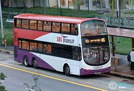

Lilysparks transport company that has been in operation for a while, and we have an obligation of ensuring safety and comfort of our travellers across the west africa. Our vehicles ranges from sprinter, luxirious buses, coaster buses as well as courier services that ensure privacy and protection of your vitals packages.
Learn about our different terminals as we travel to different parts of West-Africa
Nigeria Office
Head Office
No 10.MCC road,opposite Orange Resorts,Aka-efa, Calabar, Cross-River State.
Main Line
(+234)986 666 4535
Email:info@lilystransports.com
Lagos Office
Ajah Branch
KM,25,Lekki-Epe Express way, Ajiwe-Ajah.
Ikeja
9,Medical Road,former Simbiat Abiola Way,opp,Zenith Bank.
>
Ghana
Head Office
425 Lake Rd,Kumasi, Ghana
Main Line
(+233)244 667 9748
Email.com:info@lilystransports.gh
Tema
Industrial Enclosure,GT-020-5892,Tema,Ghana.
Accra
Abossey-Okia Mortuary Road(Opp. 2nd Total Filling station), by Kaneshi R/About,Accra, Ghana.
Madina
M177,Madina Firestone,after Atomic junction,Firestone, Bus-stop
Burkina Faso